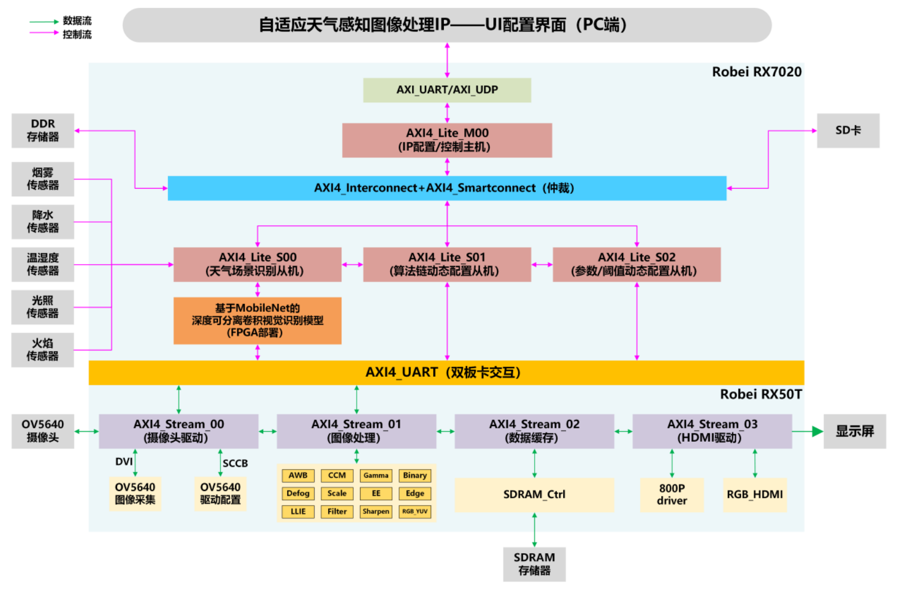

多模态环境感知
结合轻量天气识别模型与多类传感器信息，识别晴、雨、雾等状态，为后续处理提供依据。
Hardware / Vision
项目聚焦复杂天气下的图像退化问题，希望让系统能够先“感知环境”，再“决定策略”，最后由硬件侧高速执行， 而不是依赖单一固定算法处理所有场景。
Overview
面向智能监控、无人机感知等场景，图像质量会随着雾、雨、强光、夜间低照等条件快速波动。 传统固定算法链很难在不同天气之间保持稳定表现。
因此我们围绕“环境感知 - 算法决策 - 硬件执行”搭建自适应系统， 让天气识别结果能够直接驱动 ISP 算法链切换，形成真正动态的图像处理闭环。
Core Modules
结合轻量天气识别模型与多类传感器信息，识别晴、雨、雾等状态，为后续处理提供依据。
设计调度引擎，根据实时感知结果切换 ISP 处理链，使系统能适应不同环境条件。
核心模块采用 Verilog RTL 实现，在 FPGA 上进行流水化部署，支撑实时高清输出。
通过 PyQt5 上位机完成参数配置、效果预览与调试联动，提升系统工程可用性。
My Contribution
Architecture

Result